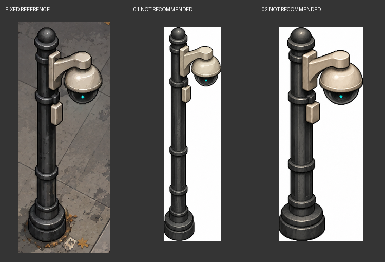
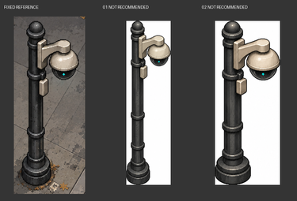
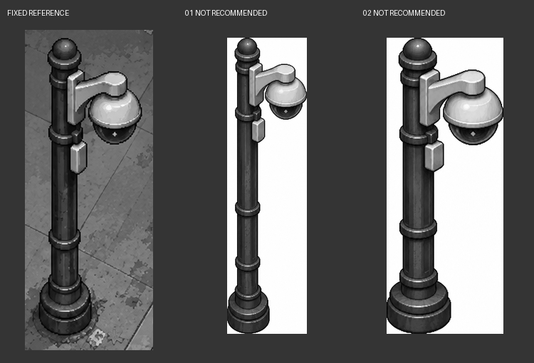

Both proposals are NOT RECOMMENDED. No owner acceptance, editable master, native integration or production admission.
Reference device and generated proposals shown at the same occupied height, not a proposed game scale. Reference crop retains scenery. Neither generated image has alpha. Their white backgrounds are real source pixels.



Source hashes, actual provider metadata and limitations: record. Earlier rejected packets are retained separately.